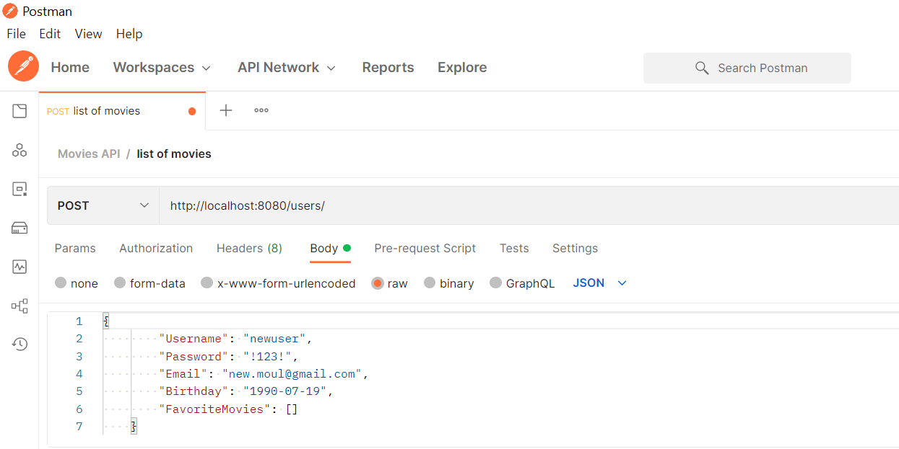
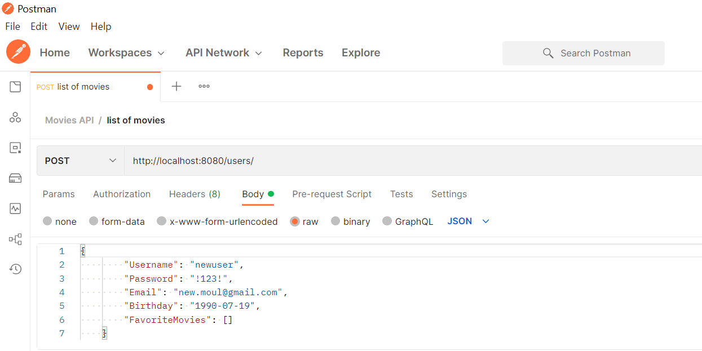

Case Study
MyFlix Full-Stack App Project
Overview
MyFlix is a web app, developed using the MERN stack,
that provides users with access to information about movies,
directors, and genres. Users can create an account, update their personal data,
and create a list of favorite movies.

Credits
Role: Lead Developer
Tutor: Ayeah Godlove Akoni
Mentor: Renish Bhaskaran
Duration
The server-side achievement took much longer than expected due to some laptop issues,
which in total lengthened to 20 days to accomplish it. On the other hand,
the development of the client-side took around 2 weeks.
It was because I needed time to wrap my head around how React (and React Redux) work.
Tools/Tech Stack
Backend: VS Code, Node.js, Powershell, CodePen.io
(Express, Morgan, bodyParser, mongoose, CORS) MongoDB, Postman, Heroku, JSDoc
Frontend: VS Code, JavaScript, React, React Redux,
React Bootstrap, Parcel, PropTypes, Axios, Netlify
Purpose and Context
MyFlix was built using the MERN stack (MongoDB, Express, React, and Node.js).
The app was a personal project I built as part of my web development course at CareerFoundry
to demonstrate my mastery of full-stack JavaScript development.
Objective
The goal of the project was to create a full-stack project
I can add to my professional portfolio. The problem I wanted to solve is to build
the complete server-side and client-side application from scratch.
Server Side
I created a RESTful API using Node.js and Express, that interacts with a
non-relational database (MongoDB). REST (REpresentational State Transfer)
is an architectural style for developing web services. The API
(An application program interface that allows two software programs to communicate with each
other) can be accessed via commonly used HTTP methods like GET or POST.
To retrieve data from and store data in the database, CRUD (Create, Read, Update, Detete) methods are
used. The API provides movie information in JSON format.
To test the API, I used Postman. I also included user authentication and
authorization code in the form of basic HTTP authentication and JWT authentication. JSON Web Token (JWT)
is an open standard (RFC 7519)
that defines a compact and self-contained way for securely transmitting information between parties as a
JSON object.
This information can be verified and trusted because it is digitally signed using a private key/ or a
public key pair by the Identity Provider(IdP).
An important benefit, since this means you can be sure that the senders are who they say they are.
Additionally,
the structure of a JWT allows you to verify that the content hasn't been tampered with.

Client Side
After completing the API (and the whole back-end side), I started to build the interface users would
need when making requests to,
and receiving responses from, the server-side. It is a single-page, responsive application,
developed with React and React-Redux. It provides several interface views, including, but not limited
to,
the main view (shows a list of all movies), single movie view (shows data about a single movie and
allows
users to add the movie to their list of favorites), a login view, a registration view and a profile view
(where users can update their user data and list of favorites).
Challenges and Lessons
This was both my favorite and most challenging project. During the back-end development,
I have enjoyed building the API and working with database structures, which makes it to be my favorite
programming
skill so far.
I also quickly learned to use the terminal, which always felt intimidating at first. Developing the
client-side,
it took me a while to understand how React and Redux work and how to achieve the desired results.
But with the help of my mentor and a pair-programming session with an experienced developer, I
understood the concept.
One of the issues that took me the longest time to figure out,
was that I couldn't access the authentication token and had continuous errors in Chrome's DevTool,
after a deep and careful search, together with the help of my mentor, we figured I had a typo mistake.
After fixing it (by removing an unnecessary sign) it finally resolved the mystery.
While programming these both achievements, I had an issue with my laptop which limited my progress and
had to solve it on a friend's laptop
during that time,
which made it much more challenging because I had to download all the frameworks and libraries to a
non-developer
machine, that created
another issues while dowloading the wrong (updated and outdated) versions with the NPM for the
frameworks.
Another stage of troubleshooting (and quite popular among Web-Developer) lead to a constant loop and the
feeling
of paradox of downloading the wrong version of the packages that work along with other installed ones.
So far I learned during this challenging project that there's always a solution,
never mind how frustrating it could be, just need to know where and what to search and
the right questions to ask because the answer was always there right in between the lines of my code.
With the help and consulting of my mentor, Youtube Tutorials, Stack-Overflow,
and other platforms for guidance and troubleshooting, I could inspect the root of the problem and fix
it.
Considering it was my first Back-end educational project, and no prior experience, I am satisfied with
how it turned out.
Thanks to my hard work on this project,
I would know how to optimize better my time with higher skills for future work plans.
(In the image below can see the error in Chorme's DevTool while trying to access the token)
-

-

-

Overview
MyFlix is a web app, developed using the MERN stack, that provides users with access to information about movies, directors, and genres. Users can create an account, update their personal data, and create a list of favorite movies.
Credits
Role: Lead Developer
Tutor: Ayeah Godlove Akoni
Mentor: Renish Bhaskaran
Duration
The server-side achievement took much longer than expected due to some laptop issues, which in total lengthened to 20 days to accomplish it. On the other hand, the development of the client-side took around 2 weeks. It was because I needed time to wrap my head around how React (and React Redux) work.
Tools/Tech Stack
Backend: VS Code, Node.js, Powershell, CodePen.io (Express, Morgan, bodyParser, mongoose, CORS) MongoDB, Postman, Heroku, JSDoc
Frontend: VS Code, JavaScript, React, React Redux, React Bootstrap, Parcel, PropTypes, Axios, Netlify
Purpose and Context
MyFlix was built using the MERN stack (MongoDB, Express, React, and Node.js). The app was a personal project I built as part of my web development course at CareerFoundry to demonstrate my mastery of full-stack JavaScript development.
Objective
The goal of the project was to create a full-stack project I can add to my professional portfolio. The problem I wanted to solve is to build the complete server-side and client-side application from scratch.
Server Side
I created a RESTful API using Node.js and Express, that interacts with a non-relational database (MongoDB). REST (REpresentational State Transfer) is an architectural style for developing web services. The API (An application program interface that allows two software programs to communicate with each other) can be accessed via commonly used HTTP methods like GET or POST. To retrieve data from and store data in the database, CRUD (Create, Read, Update, Detete) methods are used. The API provides movie information in JSON format.
To test the API, I used Postman. I also included user authentication and authorization code in the form of basic HTTP authentication and JWT authentication. JSON Web Token (JWT) is an open standard (RFC 7519) that defines a compact and self-contained way for securely transmitting information between parties as a JSON object. This information can be verified and trusted because it is digitally signed using a private key/ or a public key pair by the Identity Provider(IdP). An important benefit, since this means you can be sure that the senders are who they say they are. Additionally, the structure of a JWT allows you to verify that the content hasn't been tampered with.
Client Side
After completing the API (and the whole back-end side), I started to build the interface users would need when making requests to, and receiving responses from, the server-side. It is a single-page, responsive application, developed with React and React-Redux. It provides several interface views, including, but not limited to, the main view (shows a list of all movies), single movie view (shows data about a single movie and allows users to add the movie to their list of favorites), a login view, a registration view and a profile view (where users can update their user data and list of favorites).
Challenges and Lessons
This was both my favorite and most challenging project. During the back-end development, I have enjoyed building the API and working with database structures, which makes it to be my favorite programming skill so far. I also quickly learned to use the terminal, which always felt intimidating at first. Developing the client-side, it took me a while to understand how React and Redux work and how to achieve the desired results. But with the help of my mentor and a pair-programming session with an experienced developer, I understood the concept.
One of the issues that took me the longest time to figure out, was that I couldn't access the authentication token and had continuous errors in Chrome's DevTool, after a deep and careful search, together with the help of my mentor, we figured I had a typo mistake. After fixing it (by removing an unnecessary sign) it finally resolved the mystery.
While programming these both achievements, I had an issue with my laptop which limited my progress and had to solve it on a friend's laptop during that time, which made it much more challenging because I had to download all the frameworks and libraries to a non-developer machine, that created another issues while dowloading the wrong (updated and outdated) versions with the NPM for the frameworks. Another stage of troubleshooting (and quite popular among Web-Developer) lead to a constant loop and the feeling of paradox of downloading the wrong version of the packages that work along with other installed ones.
So far I learned during this challenging project that there's always a solution, never mind how frustrating it could be, just need to know where and what to search and the right questions to ask because the answer was always there right in between the lines of my code. With the help and consulting of my mentor, Youtube Tutorials, Stack-Overflow, and other platforms for guidance and troubleshooting, I could inspect the root of the problem and fix it. Considering it was my first Back-end educational project, and no prior experience, I am satisfied with how it turned out. Thanks to my hard work on this project, I would know how to optimize better my time with higher skills for future work plans.
(In the image below can see the error in Chorme's DevTool while trying to access the token)